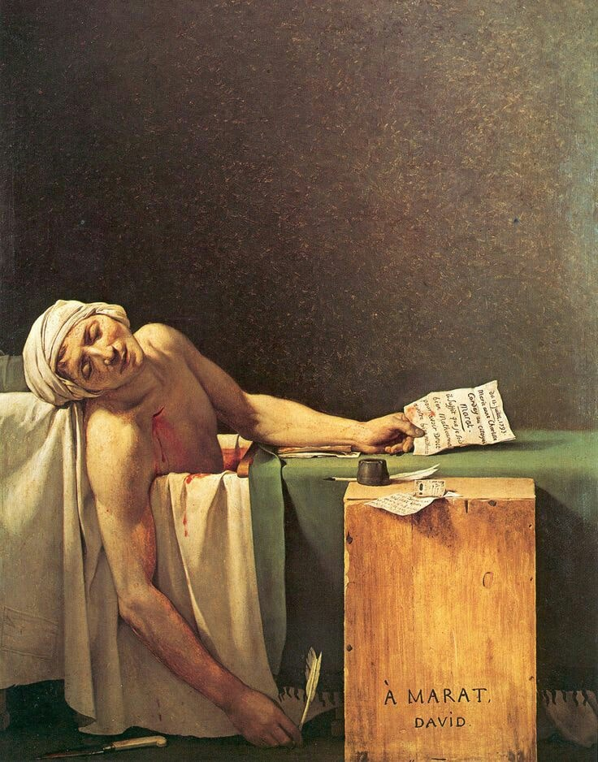
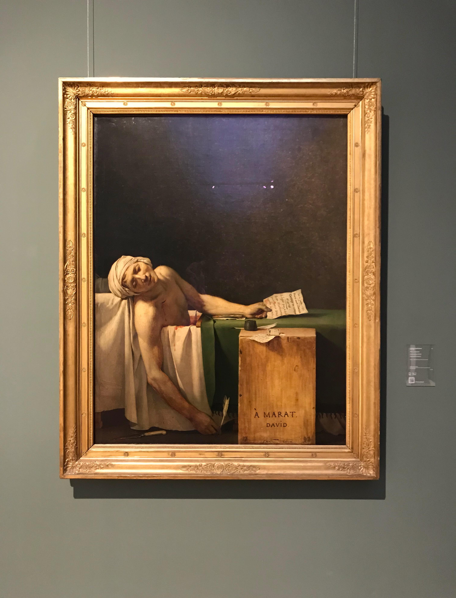

La Luce Razionale e l'Eroe Laico
Jacques-Louis David impiega una luce radente provenienti da sinistra che illumina il corpo senza vita di Marat. La luce neoclassica non è più mistica, ma etica e razionale: consacra il martire della Rivoluzione con una dignità scultorea che ricorda il Cristo della Pietà.

Rigore, Vuoto e Chiaroscuro Etico
La metà superiore del dipinto è lasciata volutamente vuota, immersa in un'ombra dorata e vibrante che concentra tutta l'attenzione emotiva sulla figura riversa nella vasca e sulla cassetta di legno trasformata in tomba laica.
